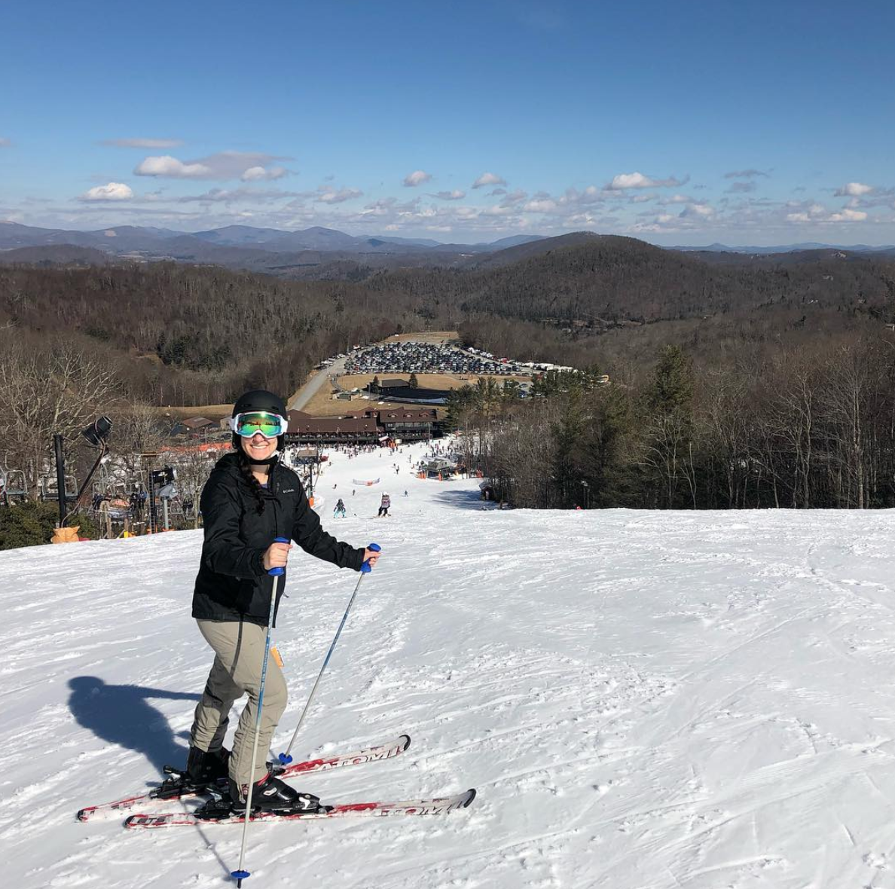

Andrea Mazzocchi
PhD Candidate, Biomedical Engineering
PhD Candidate, Biomedical Engineering
I am currently a third year PhD candidate at Wake Forest Unveristy in the VT-WF School of Biomedical Engineering and Sciences and intend to defend by May 2020. I work under Drs. Shay Soker and Aleksander Skardal at the Wake Forest Institute for Regnerative Medicine (WFIRM). My research involves many key areas of tissue engineering and regnerative medicine, specifically - cancer microenvironment, biomaterials develoment, and precision medicine applications. I have published works relating to such topics and am currently focused on developing a biomaterial specific to the hepatocellular carcinoma microenvirnment for predictive applications.
I love learning and I find tons of joy in being a beginner whether it be in skiing or coding, I revel in the feeling of trying something new and having no expectations for myself. That intial joy is what usually leads me to my next interest, and some of those interests blossom into awesome projects. This space is to share some of my projects that I'm working on and help me keep track of my own progress when other parts of my life begin to stack up.
A space to share all of the things that give me a sense of creativity and get my body outside and moving.
Winter 2018/2019 
This past winter has by far been my best since high school (circa 2011). After graduating, I permanantly moved out of my parents house and no longer lived close to any ski resorts. Although there was one just 45 minutes from my undergrad campus in Rochester, NY I never seemed to carve out time to hit the slopes. I've always loved snowboarding and have dreamed of "going pro" many times. I've known this isn't likely in my future, but getting back out regularly is. This season I recorded 11 days out! And only one of those days on the East Coast where I currently reside (North Carolina).
I also found myself clicking into skis two times this season which matches the number of times I have previously every skied. I found a hot day in North Carolina with lots of slush and easy slopes to learn on, beautiful, huge, new resorts in Colorado to shred, and mountains I've already met and love, with a little extra pow this season in Utah. I was able to do all of this for a great price using the Ikon Base Pass with student rate, I don't think the price can be beat. I initially paid $649 and 10/11 of my slope days were using the Ikon - $65 a day is a killer rate and I'm definitely investing in the pass again next season. In the spirit of winter and trying new thigns, I even ventured onto nordic skis where I learned to "skate" - I can't wait to do it again. Leaving such an amazing season behind, I'm more stoked then ever to strengthen my calves, quads and hamstrings to have a killer 2019/2020 season!
Resorts This Season:
Appalachian Ski Mountain, NC
Winter Park Resort, CO
Copper Mountain Resort, CO
Steamboat, CO
Solitude, UT
Brighton, UT
Alta, UT
To further share my thoughts, opinions, and stories, I've started writing on Medium. Posts are directly linked below. [WORK IN PROGRESS]